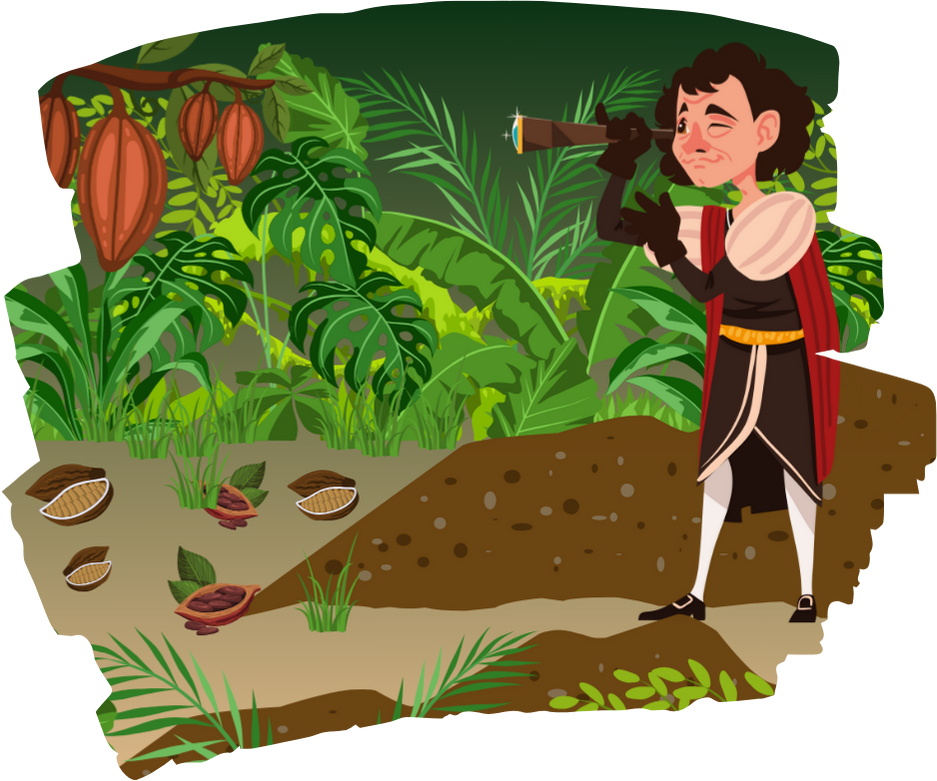

1502 – Christophe Colomb découvre le cacao
Lors d'un voyage vers les Amériques, Christophe Colomb entre en contact avec les fèves de cacao. Il les rapporte en Europe, sans vraiment comprendre leur valeur. C'est pourtant le point de départ d'une grande aventure : l'introduction du cacao sur le continent européen.